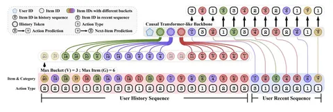

Сегодня разбираем статью CAUSE, посвящённую проблеме производительности рекомендательных архитектур на длинных последовательностях айтемов. Авторы предлагают агрегировать айтемы в бакеты по некоторому категориальному признаку и затем longterm-историю представлять в модели через эмбеддинги бакетов.
Ключевой вклад работы — механизм сжатия longterm-информации, получивший название CAUSE. На картинке выше изображено, как работает этот механизм:
- айтемы из longterm-истории бьются на бакеты по категориальному признаку, recent-история подаётся в модель полностью;
- берётся максимум V бакетов по последнему таймстемпу айтема внутри;
- внутри бакетов берётся максимум G айтемов, также отсортированных по таймстемпу;
- каждый эмбед айтема внутри бакета пропускают через MLP-проектор, затем их усредняют по размерности бакета и складывают с обучаемым эмбедом бакета;
- дополнительно в начало последовательности ставят аналог CLS-токена, причём все сегменты отделены друг от друга SEP-токенами.
Для задачи next item prediction используют InfoNCE, а для action prediction — cross-entropy loss.
Авторы выбрали датасеты KuaiRand-27K (логи интеракций с короткими видео) и MovieLens-20M (классика рекомендательных датасетов).
Эксперименты проводят на модели HSTU (3 слоя, hidden size 64, 8 attention heads), в качестве метрик берут NDCG@k и MRR, а бейзлайны — стандартный HSTU и подход GenRank, который агрегирует item и action. В результате подход даёт наилучшие метрики даже в сравнении с сетапами с более длинными последовательностями юзеров с ускорением до 6x на инференсе и до 4x на обучении.
Также авторы проводят аблейшны своего подхода: проверяют, что при отсутствии категориальных признаков событий использование кластеров из K-Means как категорий даёт улучшение относительно бейзлайна, а при исключении отдельных частей подхода качество падает.
Главное достоинство CAUSE — логичный и простой метод сжатия истории. Среди моментов для улучшения можно назвать то, что в статье нет оценки внедряемости и онлайн-результатов, а также рассматривается только одна архитектура с небольшим количеством параметров.
@RecSysChannel
Разбор подготовил
